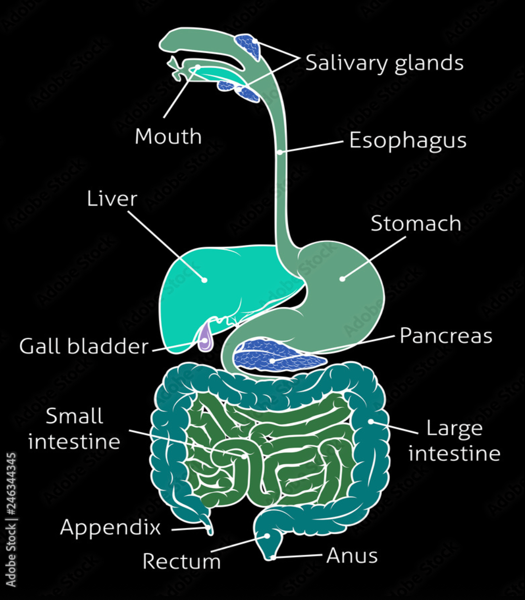

Overview & Purpose
- Digestion: The process of breaking down complex, large, insoluble food molecules into simpler, smaller, soluble molecules that can be absorbed into the bloodstream.
- Purpose: To extract nutrients (carbohydrates, proteins, fats, vitamins, minerals, water) from food for energy, growth, and repair.
- Two Main Types:
- Mechanical Digestion: Physical breakdown of food into smaller pieces (e.g., chewing, churning). Increases surface area for enzymes.
- Chemical Digestion: Breakdown of complex molecules into simpler ones using enzymes (biological catalysts).
The Alimentary Canal: Path of Food
This is the tube through which food passes.

(a) Mouth (Oral Cavity)
- Ingestion: Taking food in.
- Mechanical: Teeth perform mastication (chewing). Tongue mixes food with saliva.
- Chemical: Saliva (from salivary glands) contains:
- Salivary Amylase (Ptyalin): Begins carbohydrate digestion (Starch → Maltose).
- Mucus: Lubricates food, forming a bolus.
(b) Pharynx & Esophagus
- Pharynx: Common passage for food and air. Epiglottis (a flap) prevents food from entering the trachea (windpipe) during swallowing (deglutition).
- Esophagus: Muscular tube connecting pharynx to stomach. Food moves down via peristalsis (wave-like muscular contractions). No digestion occurs here.
(c) Stomach:
- J-shaped muscular organ. Stores food temporarily (2-4 hours).
- Mechanical: Churning action mixes food with gastric juice, forming chyme.
- Chemical: Gastric glands secrete gastric juice containing:
- Hydrochloric Acid (HCl): Kills bacteria, provides acidic pH (≈1.5−3.5), activates pepsinogen.
- Pepsinogen: Inactive enzyme, activated by HCl to Pepsin. Pepsin begins protein digestion (Proteins → Polypeptides).
- Mucus: Protects stomach lining from HCl and pepsin.
(d) Small Intestine
- Long (~6-7 meters), coiled tube; the primary site for chemical digestion and absorption of nutrients.
- Divided into three parts: Duodenum (first ~25 cm), Jejunum (middle section), and Ileum (final section).
- Duodenum: Receives acidic chyme from the stomach. Crucially, it also receives secretions from the liver/gallbladder (bile) and the pancreas (pancreatic juice), mixing them with the chyme.
- Bile:
- Produced by the liver, stored and concentrated in the gallbladder.
- Emulsifies fats: Breaks large fat globules into smaller droplets, increasing the surface area for lipase action (this is a form of mechanical processing).
- Neutralizes Acid: Bile contains bicarbonate ions (like Sodium Bicarbonate, \(\ce{NaHCO3}\)) which help neutralize the highly acidic chyme coming from the stomach.
- Why Neutralize? The acidic pH (1.5-3.5) of chyme would inactivate enzymes in the small intestine. Both pancreatic and intestinal enzymes require an alkaline environment (optimal pH around 8) to function effectively.
- Enzymes Acting in the Small Intestine: Digestion is completed here by enzymes from two sources:
- Pancreatic Enzymes (from Pancreatic Juice):
- Pancreatic Amylase: Continues starch digestion → Disaccharides (e.g., Maltose).
- Trypsin: (Secreted as inactive Trypsinogen, activated in duodenum) Digests proteins and polypeptides → Smaller Peptides.
- Pancreatic Lipase: Digests emulsified fats (triglycerides) → Fatty Acids and Glycerol.
- Pancreatic Nucleases (DNase, RNase): Digest nucleic acids (DNA, RNA) → Nucleotides.
- Intestinal Enzymes (Brush Border Enzymes - located in the cell membranes of the intestinal lining):
- Disaccharidases: (e.g., Maltase, Sucrase, Lactase) Digest disaccharides → Monosaccharides (Maltose → Glucose; Sucrose → Glucose + Fructose; Lactose → Glucose + Galactose).
- Peptidases: (e.g., Aminopeptidases, Dipeptidases) Digest small peptides → Amino Acids.
- Nucleotidases & Nucleosidases: Continue breakdown of nucleotides → Nitrogenous bases, pentose sugars, and phosphate ions.
- Absorption: The Jejunum and Ileum are the main sites for absorption of the final products of digestion (monosaccharides, amino acids, fatty acids, glycerol, nucleotides) as well as vitamins, minerals, and water.
- Adaptations for Absorption: Huge surface area created by internal folds, villi (finger-like projections), and microvilli (microscopic projections on the surface of villi cells). Each villus contains blood capillaries and a lacteal (lymph capillary) for nutrient uptake.
(e) Large Intestine
- Wider diameter, shorter length (~1.5 meters).
- Includes: Cecum, Colon (ascending, transverse, descending, sigmoid), Rectum, Anus.
- Functions:
- Absorption of water and electrolytes.
- Formation and storage of feces (undigested material, bacteria, water).
- Houses gut bacteria that synthesize some vitamins (e.g., Vitamin K, some B vitamins).
(f) Anus
- Opening through which feces are eliminated from the body (egestion or defecation). Controlled by sphincter muscles.
Accessory Digestive Organs
These organs assist digestion but food does not pass through them.
(a) Salivary Glands
- (Parotid, submandibular, sublingual) Produce saliva.
(b) Liver
- Largest internal organ. Many metabolic functions.
- Digestive Function: Produces Bile. Bile emulsifies fats (breaks large fat globules into smaller droplets), increasing surface area for lipase action. Note: Emulsification is mechanical, not chemical digestion. Bile also helps neutralize stomach acid.
(c) Gallbladder
- Small organ located beneath the liver.
- Stores and concentrates bile produced by the liver.
- Releases bile into the duodenum via the bile duct.
(d) Pancreas
- Located behind the stomach. Has both endocrine and exocrine functions.
- Exocrine Function: Produces pancreatic juice, released into the duodenum. Contains:
- Pancreatic Amylase: Digests remaining starch to disaccharides.
- Trypsin(ogen): Secreted as inactive trypsinogen, activated in duodenum. Digests proteins/polypeptides to smaller peptides.
- Lipase: Digests fats (triglycerides) into fatty acids and glycerol.
- Bicarbonate ions (\(\ce{HCO3^−}\)): Neutralize the acidic chyme from the stomach, providing optimal alkaline pH for intestinal enzymes.
Summary
| Location |
Enzyme(s) |
Source |
Substrate |
Product(s) |
Optimal pH |
| Mouth |
Salivary Amylase |
Salivary Glands |
Starch |
Maltose (Disaccharide) |
6.7-7.0 |
| Stomach |
Pepsin |
Gastric Glands |
Proteins |
Polypeptides |
1.5-3.5 |
| Small Intestine |
Pancreatic Amylase |
Pancreas |
Starch |
Maltose (Disaccharide) |
Alkaline |
| Small Intestine |
Trypsin |
Pancreas |
Polypeptides |
Smaller Peptides |
Alkaline |
| Small Intestine |
Nuclease (DNAse RNAse) |
Pancreas |
DNA & RNA |
Nucleotides |
Alkaline |
| Small Intestine |
Lipase |
Pancreas |
Fats (emulsified) |
Fatty Acids & Glycerol |
Alkaline |
| Small Intestine |
Disaccharidases (e.g., Maltase) |
Intestinal Wall |
Disaccharides |
Monosaccharides (e.g., Glucose) |
Alkaline |
| Small Intestine |
Peptidase |
Intestinal Wall |
Peptides |
Amino Acids |
Alkaline |
| Small Intestine |
Nucleotidase and Nucleosidase |
Intestinal wall |
Nucleotide |
Pentose sugar, Nitrogen base and phosphate ion |
Alkaline |
Written by Parthipan Kasiban